|
|||||||||||||||||||||||||||
|
野沢温泉と鍋倉山スキー |
| 開 催 日 | ２００９年１月３１日〜２月１日 | ||
| リーダー | Ｌ.平野、ＳＬ.小山・米倉 | ||
| 報 告 者 | 平野 | ||
| HP制作者 | 佐藤 | ||
| 参加者数 | １６名 （会員１６名） | ||
| 最初は小パーティを考えていたが希望者が多く１６名に増やした。それでも参加できずに涙を呑んだ方もいた。シーズン中に２回目を考えている。 標高１３００ｍほどの鍋倉山は麓から標高差７５０ｍ、３時間程度の登りと手軽ながら、見事なブナに覆われた幽玄郷、滑降ルートも多彩で高齢者向きの好コースである。 |
| 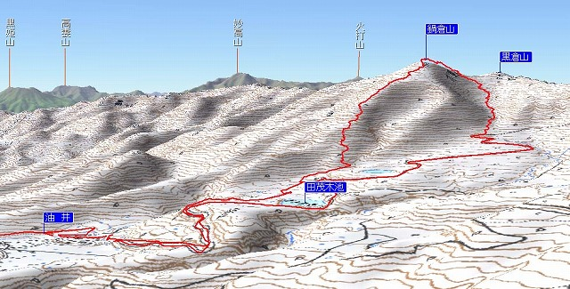 |
| 地図を立体表示しＧＰＳトラックを載せた |
| 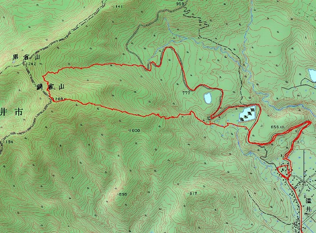 |
| カシミールでＧＰＳトラックを表示させる。（ＧＰＳデータは小松崎さん提供） |
| １日目 １月３１日（土） |
| 季節はずれの大雨、１日目鍋倉山の予定を変更して野沢温泉に直行する。下は雨だったが毛無山は雪で思わぬ深雪を楽しむ。宿舎「さかや旅館」は野沢温泉１、２を争う名旅館ながら米倉さんのコネのおかげで格安料金にて豪華宴会と水尾の吟醸酒、白濁温泉を堪能する。 |
| 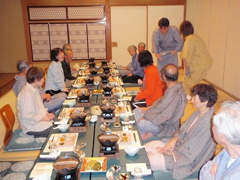 | A | 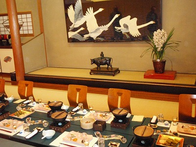 |
| 宴会の始まり | 豪華な料理 |
| 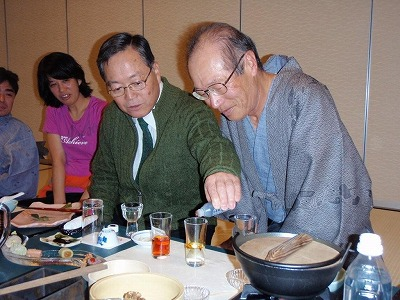 | A | 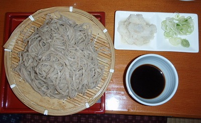 |
| 温泉水の還元力をデモする社長 | 野沢温泉の辛味大根ソバ |
| ２日目 ２月１日（日） |
|
明けて２月１日も霰模様のみぞれ、とりあえず温井まで行ってみようと出発したが途中から風雪となり、温井集落は雪に蹲っていた。９時３０分に出発、林道を進み途中から田茂木池南の休耕田を突っ切ってドン詰まりの小屋から支尾根に取り付く。見事な霧氷のブナ林を２時間余り登行し、午後１時に全員無事、山頂に到着する。記念写真を撮り、早速下山にかかる。 |
| 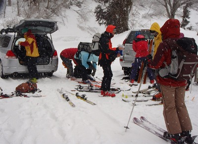 | A | 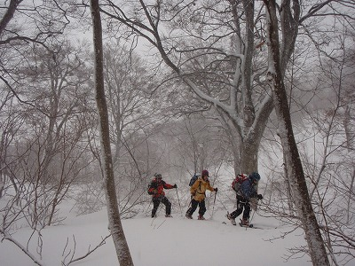 |
| 鍋倉山へ出発 | ブナ林を登る |
| 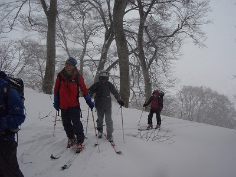 | A | 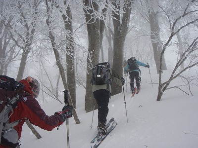 |
| ブナ林を登る | ブナ林を登る |
| 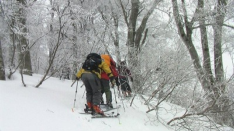 | A | 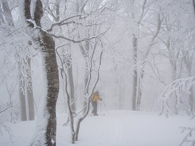 |
| ブナ林を登る | ブナ林を登る小松原さん |
| 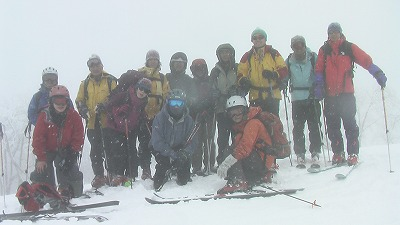 | A | 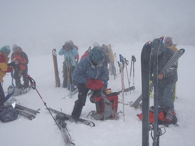 |
| 鍋倉山頂上 | シールを外して滑降準備 |
| 黒倉山に延びる尾根を少し進み、すぐに東の沢に滑り込む。ここから標高差２００ｍほどはブナ林の中の深雪を堪能する（写真８）。あとは右岸沿いに進み、あっという間に林道に出る。林道を滑り２時４５分、雪に煙る温井集落に到着、温泉、料理、深雪と３拍子揃った今回のクラブ山行の幕を閉じた。 |
| 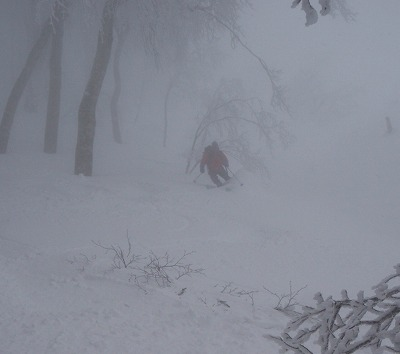 | A | 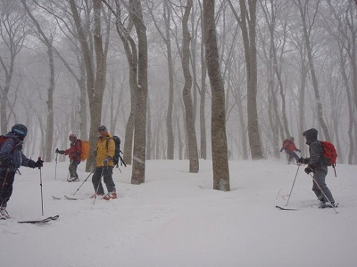 |
| ブナ林の滑降 | 滑降中のひと息 |
| 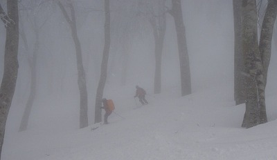 | A | 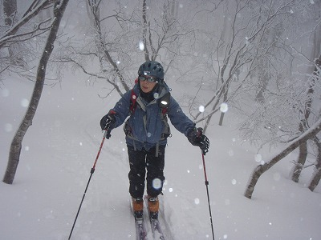 |
| ブナの幽玄郷を滑る | 高井夫人 |